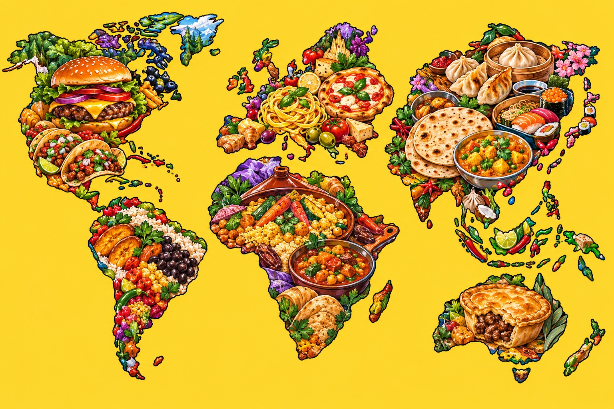

THE DAILY DINNER DILEMMA, SOLVED.
WHAT SHOULD
WHAT SHOULD
I COOK TONIGHT?
Hungry brain. Empty ideas.
Give us 20 seconds. We’ve got dinner.
4 quick questions→3 tasty possibilities→zero stress

- 01Tell us your mood.NEXT →
- 02Meet your dinner.NEXT →
- 03Get cooking.LET’S GO →
01 / 04
Go with your gut. You can always go back.
A LITTLE OF THIS. A LITTLE OF THAT.
OKAY OKAY…
WE’RE COOKING 🔥
THE DINNER DILEMMA? HANDLED.
TONIGHT’S PICKS 🍽️
Three good ideas.
One very happy stomach.
OR MAYBE…
GOOD OPTIONS. TOUGH CALL.Same mood. Fresh possibilities.